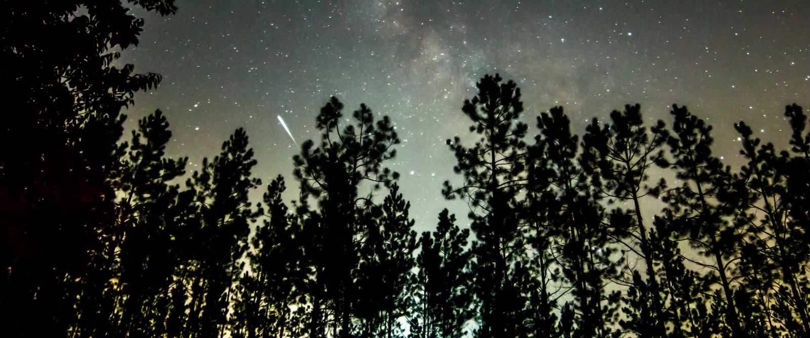

I · DARKNESS
Black as a working color
Large parts of the frame are allowed to fall off into true black. The audience fills that space with dread, and the budget never has to show a monster it can't afford.
Long-form writing on the most cinematic show of the 1990s: how it was lit, framed, scored and directed, where it came from, and what it left behind.
The lines that outlived the show, surfacing and dissolving the way they do in memory.
Close readings of episodes, directors, cinematographers and composers. Written for people who notice where the camera is.
Robert Modell has no makeup, no effect and no dark to hide in. His power is a man talking, filmed as ordinary coverage, which puts the viewer in the same chair as his victims. Pusher is the hour where The X-Files came closest to admitting what a cut does.
Musings of a Cigarette Smoking Man is a story about a writer whose publisher changed his ending. Its own executives then changed its title, and its planned last shot vanished from the cut. The episode is the series admitting what its conspiracy had always been: an account from a man who needed to have been there.
The X-Files was composed for the 4:3 television set, and the 2015 remaster that now streams everywhere opened it to 16:9. The wider picture adds a little at the sides and takes the top, and the top was where the show kept its fear.
The X-Files teaser showed the audience the thing before the agents ever heard of it. That made every case an exercise in dramatic irony, and quietly rigged the show's central argument in Mulder's favor from the first scene.
Network television in 1993 was mostly bright, flat and evenly lit so it would read on a small screen. The X-Files went the other way, and most of what people mean by its look comes down to six habits.

Large parts of the frame are allowed to fall off into true black. The audience fills that space with dread, and the budget never has to show a monster it can't afford.
Handheld flashlights are the key light in hundreds of scenes. Wherever an agent points the beam is wherever the audience gets to look, which makes the lighting plan and the point of view one and the same.
Smoke in the air turns every light source into a visible shaft. Figures are often rimmed from behind and left unlit from the front, reading as silhouettes before they read as people.
The Pacific Northwest supplied overcast skies, wet asphalt and forests that swallow light. The flat gray daylight became as recognizable as the night work.
Slides, implants, bite marks, dental x-rays. The show cuts to objects the way a procedural cuts to clues, and the inserts carry a lot of the storytelling that dialogue doesn't.
Mark Snow's synthesized drones and the sound design work in the space the image refuses to show. A low tone tells you something is in the room before the camera does.
Television gets remembered as a writer's medium. This show also belongs to a small group of directors, cinematographers and one composer, who between them gave it the feel of a feature film on a weekly schedule.

Created the series in 1993 and wrote much of its mythology. As a director he favored formal experiments: the black-and-white Post-Modern Prometheus and the long-take Triangle. He later directed the 2008 feature I Want to Believe.

The show's workhorse, with more than fifty episodes to his name, among them Humbug, Home, Monday and Field Trip. Known on set for pushing the scale of a television day as far as it would go. He died in January 2009.

Directed 33 episodes between 1994 and 2000, including Paper Clip, Pusher, Jose Chung's From Outer Space, Kill Switch and Drive, then took the series to cinemas with the 1998 feature.

Shaped the early seasons with Ice, Beyond the Sea and Clyde Bruckman's Final Repose. His gift for performance and tension in small spaces set the template for the standalone episode.

Wrote Pusher, Bad Blood, Drive and X-Cops, and co-wrote Monday. Bryan Cranston's performance in Drive is the reason Gilligan cast him in Breaking Bad.

Four scripts in the original run, Humbug, Clyde Bruckman, War of the Coprophages and Jose Chung, taught the show it could be funny and sad at once. He returned to write and direct Mulder and Scully Meet the Were-Monster.

The early-season team behind Squeeze, Ice and Home. Wong directed Morgan's Musings of a Cigarette Smoking Man; decades later Morgan directed the near-silent Rm9sbG93ZXJz.

Del Ruth shot the pilot. Bartley, who died in 2025, defined the Vancouver look and won an Emmy for Grotesque. Ransom shot The Post-Modern Prometheus. Bill Roe took over in Los Angeles, won ASC awards for Drive and Agua Mala, and shot I Want to Believe.

Scored the series across nine seasons and the revival, almost entirely with synthesizers, plus both films. His theme reached No. 2 on the UK singles chart in 1996, an unlikely place for a whistled melody and a delay pedal's worth of echo. He died in July 2025.


In front of the camera. Photos from Wikimedia Commons, credited below.
Less a "best of" list than a reading list for anyone who cares about form: the episodes that took a risk with structure, image or sound, and the director who carried each one.
| Episode | Title | Director | Why it matters |
|---|---|---|---|
| 1x01 | Pilot | Robert Mandel | The visual rules arrive fully formed: night exteriors, flashlight keys, rain, photographed by Thomas Del Ruth. |
| 1x08 | Ice | David Nutter | A single Arctic location and five people who can't trust each other. Paranoia staged entirely through blocking and eyelines. |
| 1x13 | Beyond the Sea | David Nutter | The first episode built around Scully's interior life, and a lesson in letting a guest performance (Brad Dourif) carry the frame. |
| 2x05 | Duane Barry | Chris Carter | An abduction rendered almost entirely in light and sound. The show working out how to film something it had no intention of showing. |
| 3x04 | Clyde Bruckman's Final Repose | David Nutter | Comedy and grief held in the same shot. Darin Morgan's script and Peter Boyle's performance are the textbook on tonal control. |
| 3x20 | Jose Chung's From Outer Space | Rob Bowman | Nested, contradictory flashbacks. A satire of how stories get told, told through the grammar it is mocking. |
| 4x02 | Home | Kim Manners | Rural horror shot with the patience of a feature. The first episode of the series to carry a viewer discretion warning. |
| 4x07 | Musings of a Cigarette Smoking Man | James Wong | A secret history of postwar America seen from behind the curtain. The villain gets an essay film of his own. |
| 5x05 | The Post-Modern Prometheus | Chris Carter | Black-and-white, an open homage to James Whale's Frankenstein. Joel Ransom's photography was Emmy-nominated. |
| 5x12 | Bad Blood | Cliff Bole | Two incompatible versions of the same night. Unreliable narration used for character comedy, with every detail shifting between tellings. |
| 6x02 | Drive | Rob Bowman | A chamber piece in a moving car. Bill Roe won an ASC award for it, and Bryan Cranston's work here led to Breaking Bad. |
| 6x03 | Triangle | Chris Carter | Built to play as four unbroken takes in the spirit of Hitchcock's Rope, with split-screen in the final acts. |
| 6x19 | The Unnatural | David Duchovny | Duchovny's first episode as writer and director: a baseball fable set in 1947, and an Emmy-nominated showcase for Bill Roe. |
| 7x12 | X-Cops | Michael Watkins | Shot entirely on videotape in the format of COPS. The monster is barely seen, because the format won't allow it. |
| 7x17 | all things | Gillian Anderson | Anderson's only episode as writer and director: a slow, meditative Scully story about chance, faith and attention. |
| 10x03 | Mulder and Scully Meet the Were-Monster | Darin Morgan | The revival's high point: a comedy about middle age and meaning that is also, quietly, about the original run. |
The X-Files sits between the paranoid thrillers of the 1970s and the prestige television that followed it. Scroll the line.
A reporter who keeps finding monsters nobody believes in. Chris Carter has named it as a direct inspiration.
Alan J. Pakula's conspiracy thriller: institutions as a maze, and the hero swallowed by the architecture.
Parking-garage informants in the dark. The show's Deep Throat takes his name from Watergate.
Light as the sign of the alien. Every beam that floods a road at night owes it something.
Proof that network TV could be strange. David Duchovny played DEA agent Denise Bryson.
A young woman in an FBI world of men. Carter has said Scully is partly modeled on Clarice Starling.
A procedural with a serialized conspiracy underneath. Shot on 35mm, mostly at night, in the rain.
Carter's darker companion series, about a former FBI profiler who sees what killers see.
Rob Bowman's feature, cast with Martin Landau, Armin Mueller-Stahl and Blythe Danner, bridging seasons five and six.
Vince Gilligan's series, with the actor he found in Drive.
An FBI team, a believer and a skeptic, and a weekly case laid over a long mythology.
Government labs, small-town disappearances and flashlights in the woods, filtered through the 1980s.